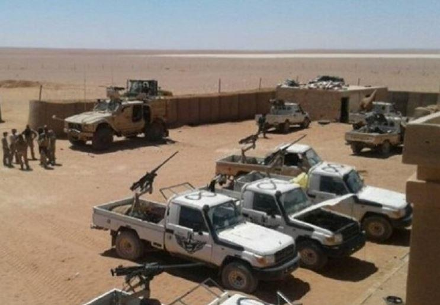
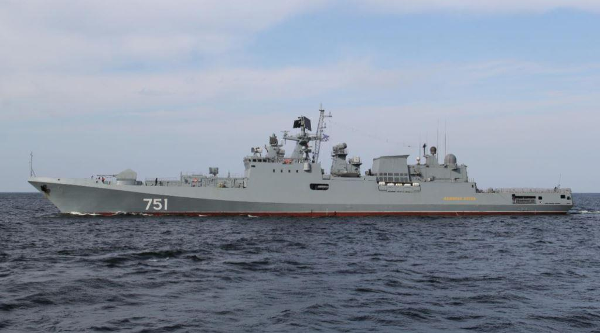

Ceux qui veulent provoquer la Russie. Plan US d’un faux attentat chimique en Syrie pour justifier un bombardement…
par Federico PIERACCINI
Cet article a été publié il y a plusieurs mois, en mars 2018, sur le site strategic-culture.org et pourtant, les manipulations qu’évoque Federico PIERACCINI se produisent en ce moment même ...
Les événements en Syrie ressemblent de plus en plus à une confrontation directe entre grandes puissances plutôt qu’à une guerre par procuration. Les paroles de M. Lavrov, prononcées il y a quelques jours, révèlent la phase critique des relations internationales que le monde traverse, avec un conflit potentiellement dévastateur prêt à s’enflammer dans la région du Moyen-Orient.
Un avertissement alarmant de Sergueï Lavrov et du chef de l’état-major général russe, Valery Gerasimov, a été annoncé par l’intermédiaire de Russia Today (RT) et de plusieurs médias russes. Le contenu est explosif et mérite la plus large diffusion possible. Gerasimov a affirmé que Moscou avait « des informations fiables selon lesquelles les combattants [djihadistes] se préparent à mettre en scène l’utilisation par les troupes gouvernementales d’armes chimiques contre la population civile ». Il a allégué que les États-Unis avaient l’intention d’accuser les troupes d’Assad d’utiliser des armes chimiques contre des civils, puis de « bombarder » Damas. Gerasimov a averti que la Russie « engagerait des mesures de rétorsion » si les États-Unis ciblaient des zones où ses forces armées sont situées dans la capitale syrienne.
« Des conseillers militaires russes, des représentants du Centre pour la réconciliation, et des membres de la police militaire se trouvent actuellement dans la capitale syrienne » a indiqué M. Gerasimov, ajoutant que les forces armées russes réagiraient, en cas de danger pour la vie des militaires russes, à la fois contre les « missiles » et leurs « lanceurs ». Quelques heures plus tôt, Lavrov a critiqué les propos de l’émissaire américain à l’ONU, Nikki Haley, au sujet de la disposition de Washington à « bombarder Damas et même le palais présidentiel de Bachar Assad, indépendamment de la présence des représentants russes là-bas ». « C’est une déclaration absolument irresponsable » a ajouté le diplomate russe.
Les mots de Gerasimov sont encore plus graves, puisqu’il explique comment les États-Unis et leurs alliés préparent le terrain pour justifier une attaque contre la Syrie. Selon des informations, des terroristes stationnés à Al-Tanf – une base militaire américaine illégale en Syrie – ont reçu vingt tonnes de chlore gazeux et des détonateurs, camouflés en cartouches de cigarettes, pour attaquer dans une zone densément peuplée de civils sous le contrôle des terroristes.
Ce qui se passerait alors est déjà évident, avec les Casques blancs – i.e. al-Qaïda – et les médias usuels prêts à diffuser les images des victimes de l’attaque, abusant les sentiments des spectateurs occidentaux ignorants de la conspiration en cours. Les efforts pour cibler la Russie ont déjà atteint les niveaux d’alerte les plus élevés, avec l’empoisonnement sous faux-drapeau de l’espion russe au Royaume-Uni. Il semble que les États-Unis, le Royaume-Uni, la France et l’Allemagne déploient des efforts considérables pour provoquer une confrontation militaire avec Moscou.
Comment pouvons-nous interpréter autrement les menaces de Macron de frapper Damas, ainsi que ses sinistres conseils aux journalistes étrangers de ne pas aller à Damas dans les prochains jours et, pour ceux qui sont déjà là-bas, de quitter la capitale immédiatement ?
Il y a même eu des bavardages dans les cercles diplomatiques qui suggèrent que le personnel de l’ONU quitte Damas. Cela pourrait être une guerre psychologique ou un prélude à la guerre. Avec des enjeux si élevés, nous ne pouvons pas nous permettre d’ignorer les détails, même s’il s’agit de désinformation. L’attaque américaine semble imminente, avec des signes croissants de mouvements de navires de guerre américains et russes en Méditerranée en formation d’attaque.
Les représentants militaires russes ont réitéré qu’en cas d’attaque, ils répondront en frappant à la fois les missiles et les navires à partir desquels les missiles sont lancés. Les choses deviennent très dangereuses et le risque d’une confrontation directe entre les États-Unis et la Fédération de Russie augmente à chaque heure qui passe. Le transfert de nombreux avions américains d’Incirlik, en Turquie, à Al-Azrak, en Jordanie, est une autre indication de la préparation d’une attaque, puisque les forces déplacées en Jordanie sont proches de la base d’Al-Tanf. La stratégie proposée pourrait impliquer une attaque contre la ville de Daraa, dans le but de sécuriser les frontières entre la Syrie, la Jordanie et Israël.
Les avertissements de Lavrov et Gerasimov semblent sans précédent, étant donné qu’ils détaillent un plan déjà en cours, manifestement approuvé aux plus hauts niveaux et visant à provoquer et à justifier une attaque contre la Syrie, attaque qui engloberait les forces russes en Syrie. Les tensions continuent de croître, suite à la destruction, par la Russie, d’un drone par deux missiles sol-air lancés depuis sa base aérienne de Hmeimim.
Moscou a même déployé en Méditerranée la frégate Admiral Grigorovich Admiral Essen et la frégate anti-sous-marine de classe Krivak II Pytivyy. Les deux sont préparées pour des opérations anti-navires et anti-sous-marins. Des sources affirment que ce déploiement a été planifié il y a quelque temps et fait partie d’une routine de la marine russe.
Mais pendant un moment si délicat, il vaut la peine de se concentrer sur les détails. Sans recourir à un alarmisme excessif, si Lavrov a déclaré que « les mouvements des navires de guerre des États-Unis et de leurs alliés en Méditerranée semblent compatibles avec la stratégie d’utiliser cette attaque chimique pour justifier une frappe contre l’armée arabe syrienne et les installations gouvernementales » il est alors raisonnable de spéculer sur la question de savoir si les navires russes se déplacent dans la zone pour contrer toute provocation.
Il y a deux défauts fondamentaux dans le raisonnement des décideurs politiques et de l’establishment militaire américains. Ils sont convaincus qu’une démonstration de force américaine (impliquant un grand nombre de missiles de croisière lancés contre la Syrie par le biais d’une participation significative de porte-avions et de bombardiers) étourdirait la Russie en la paralysant. De plus, les généraux militaires américains sont convaincus que la Syrie et la Russie n’ont pas la capacité de se défendre pendant une longue période. Ils semblent se leurrer avec leur propre propagande. Comme leurs collègues israéliens l’ont déjà appris, une telle hypothèse est erronée. Alors que l’idée qu’une puissance de feu élevée pourrait rencontrer un certain succès, la possibilité d’une riposte des forces syriennes et russes demeure. Et cette possibilité ne semble pas avoir été suffisamment prise en compte par les États-Unis et leurs alliés.
Comment l’armée américaine et la présidence de Trump réagiraient-elles si un navire de guerre américain était coulé par des missiles anti-navires ? Cela ne ferait que démontrer la vulnérabilité des forces navales américaines face à de telles armes avancées. Cela représenterait un choc énorme pour l’armée américaine, probablement le plus grand choc depuis la fin de la Seconde Guerre mondiale. Que feraient Trump et les généraux en charge ? Ils réagiraient en bombardant davantage les forces russes, s’offrant eux-mêmes à une réaction russe dévastatrice. Le conflit pourrait s’intensifier en l’espace de quelques minutes, menant à une situation où il n’y aurait pas de gagnant possible.
Je fais un raisonnement normal en considérant que la responsabilité de l’annihilation totale sera imputée aux forces spéciales américaines qui ont livré vingt tonnes de chlore gazeux à des terroristes d’al-Qaïda en Syrie en ordonnant l’exécution d’une attaque sous faux-drapeau dans le but de blâmer Damas et Moscou. Si nous relions cet événement à ce qui se passe actuellement au Royaume-Uni, et à l’hystérie aux États-Unis entourant le prétendu piratage russe pendant les élections américaines, nous pouvons comprendre à quel point les relations internationales se sont détériorées. Cette situation rappelle l’Ukraine en 2015. Face à la résistance du Donbass, les forces ukrainiennes ont subi des défaites répétées, se laissant encercler par milliers dans différents chaudrons. Au sein du siège de l’OTAN à Bruxelles pendant cette période, il y a eu des discussions ouvertes sur l’envoi d’un contingent pour soutenir les troupes ukrainiennes. Le plan n’a toutefois jamais été réalisé, étant donné la possibilité d’une confrontation directe en Ukraine entre la Fédération de Russie et l’OTAN.
Ces derniers mois, la possibilité d’une guerre dans la péninsule coréenne a également été évoquée, et peut-être en même temps évitée par les conséquences imprévisibles, tant pour Séoul que pour les forces américaines dans la région.
En Syrie, l’approche de Washington et de ses émissaires diplomatiques et militaires semble plus imprudente et moins liée à une chaîne de commandement où la responsabilité revient au président américain. Il semble que l’État profond des États-Unis en Syrie ait un contrôle plus grand et plus occulte sur les forces américaines, sabotant chaque accord conclu entre Moscou et Washington.
Nous l’avons vu pendant la présidence d’Obama, où l’armée de l’air américaine a bombardé les troupes gouvernementales syriennes à Deir ez-Zor seulement quelques heures après un cessez-le-feu entre Lavrov et le secrétaire d’État Kerry.
La grave circonstance que nous décrivons semble être sans précédent, et pourrait aboutir à une confrontation directe entre les puissances nucléaires. Hélas, dans de telles circonstances, nous ne pouvons qu’espérer le meilleur en nous préparant au pire. Nous ne pouvons qu’attendre pour découvrir sur les manchettes des médias grand public la dernière attaque chimique en Syrie. Nous ne pouvons qu’espérer qu’il y a quelqu’un à Washington qui a suffisamment de bon sens pour prendre en compte les conséquences dévastatrices d’une attaque contre Damas et les forces russes dans la région. Jamais auparavant la région n’a été au bord d’une telle explosion comme dans les prochaines heures – en raison des actions typiquement imprudentes des États-Unis.


Partager cette page